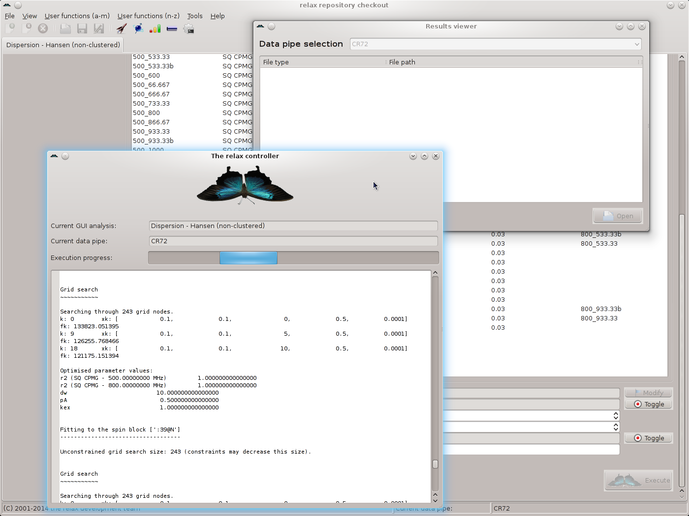
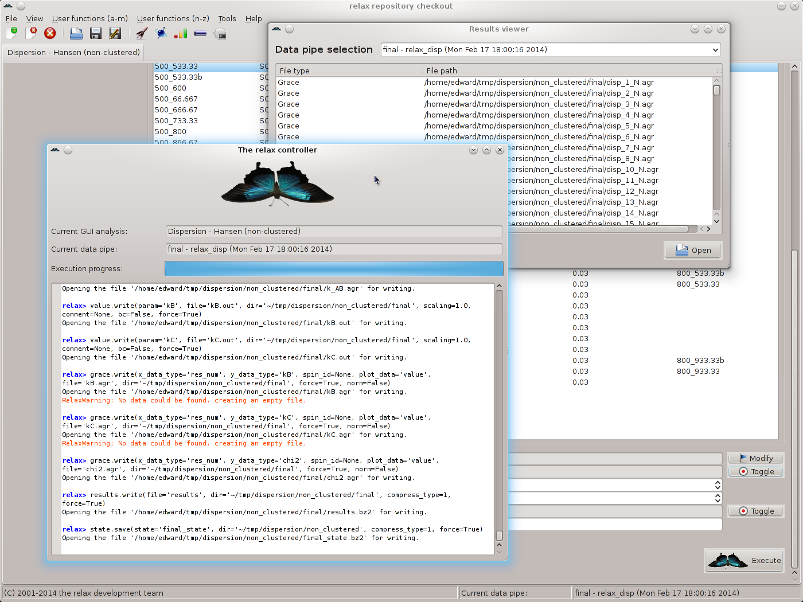

Next: Dispersion GUI mode - Up: The relaxation dispersion auto-analysis Previous: Dispersion GUI mode - Contents Index
To start the analysis, simply click the ``Execute'' button to start the analysis:
|

|
If the setup is incomplete, an error window will appear describing the problem. If a slow computer is used without Gary Thompson's multiprocessor, the calculation time could take one to several days. But on a modern, multi-core system using the OpenMPI multiprocessor, the calculation should only take hours. Once complete, you will see:
|

|
The relax controller window can be closed.
At all stages of the analysis, the logs should be checked for all warnings.
For example searching for the text `RelaxWarning' in the log file  /dispersion/log_non_clustered, the only warnings can be seen at the end of the analysis.
These can be seen to be harmless as they are indicating that certain Grace 2D plots contain no data - specifically those for dispersion parameters not present in the set of models optimised.
Any other warnings should however be very carefully noted and checked as these could be pointing to a serious problem.
/dispersion/log_non_clustered, the only warnings can be seen at the end of the analysis.
These can be seen to be harmless as they are indicating that certain Grace 2D plots contain no data - specifically those for dispersion parameters not present in the set of models optimised.
Any other warnings should however be very carefully noted and checked as these could be pointing to a serious problem.